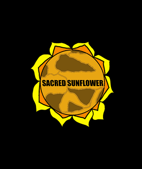
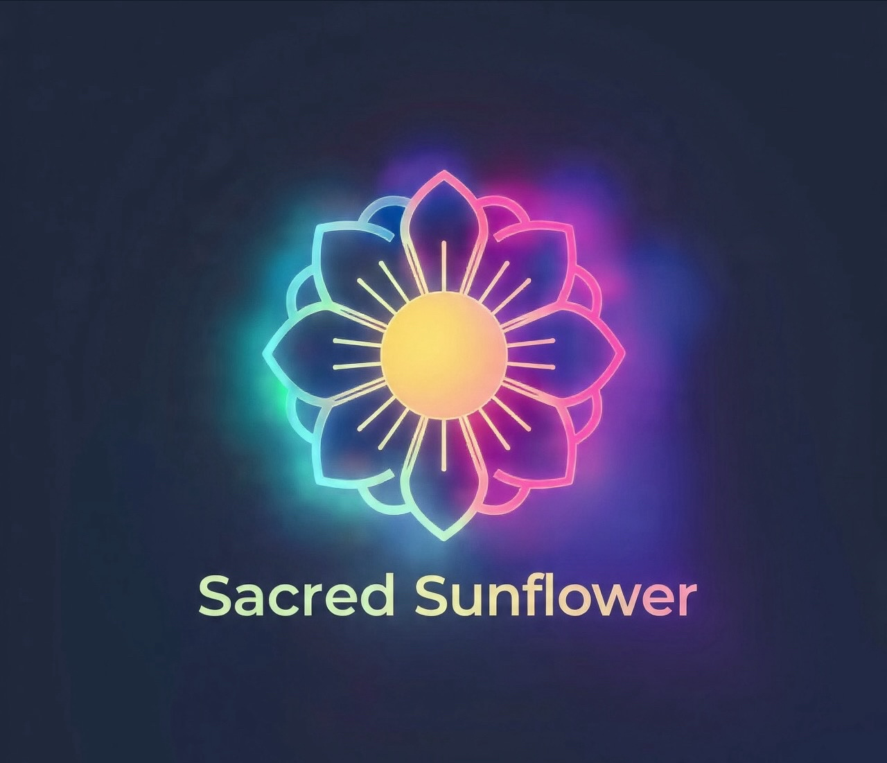
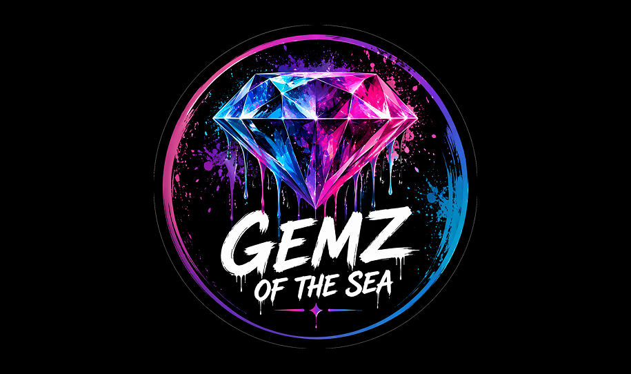
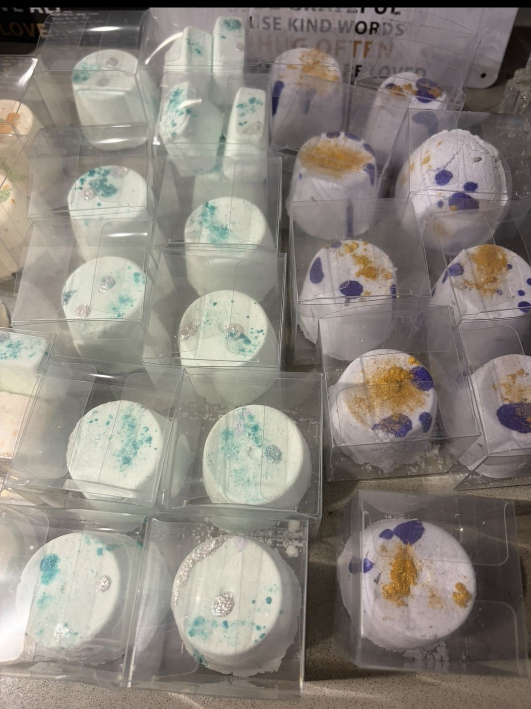
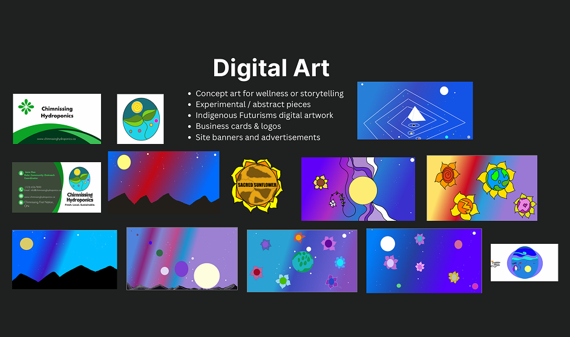

Kelsea Tan
Technology Apprentice | Digital Creator | Community Innovator
I create meaningful digital experiences rooted in technology, wellness, creativity, and community impact.
About Me
Kelsea Tan is a Technology Apprentice at Accenture, UX Designer, Digital Artist, and Community Builder. Her work exists at the intersection of technology, Indigenous identity, mental wellness, creativity, and community impact.
She brings experience across nonprofit, federal, and community-based environments, supported by training through the Indigenous Friends Association and IndigiTech. Her background in addictions support and community services shaped her trauma-informed, people-first approach to technology.
Mission
"To use technology, creativity, and innovation to empower communities and design solutions that connect people, culture, wellness, and opportunity."
My Journey
Indigenous Friends Association & IndigiTech Training
Gained foundational skills in technology, digital production, professional growth, and community innovation through Indigenous-led training programs.
Community Wellness & Addictions Support
Provided trauma-informed support, client care, and resilience-building in mental wellness settings, shaping a compassionate approach to technology.
Digital Marketing Production Intern — Aquatic Biosphere Project
Contributed to digital production, marketing, content creation, and research for an environmental and community-focused project.
Technology Apprentice — Accenture
Growing technical, design, research, and innovation skills within a global technology consulting and professional services environment.
Entrepreneurship & Creative Work
Founder of GEMZ OF THE SEA and creator of wellness-focused digital platforms, blending creativity, business, and community care.
Skills & Expertise
UX/UI Design
- Figma
- Adobe XD
- Sketch
- Wireframing
- Prototyping
- User Journeys
Front-End Development
- HTML
- CSS
- JavaScript
- Responsive Design
Digital Art
- Krita
- Photoshop
- Procreate
- Inkscape
- Logos & Banners
- Concept Art
Research & Strategy
- Digital Production
- Branding
- Marketing
- Business Planning
- Content Strategy
Community Work
- Engagement
- Client Care
- Indigenous Initiatives
- Mental Wellness
- Nonprofit / Government
Projects

Sacred Sunflower
A digital wellness hub supporting Indigenous youth with culturally grounded resources, art therapy tools, and mental health support. Focus on centralized resources, trust, accessibility, wellness, and cultural connection.
Role: UX Designer, Web Developer, Digital Artist
Tools: Figma, HTML/CSS, Krita, Mural, Canva
Learn More
Podcast / YouTube Channel
A digital platform focused on mental wellness, alternative healing, creativity, reflection, and community connection.
Learn More
GEMZ OF THE SEA
A bath and body care brand built on natural ingredients, sustainability, ocean-inspired self-care rituals, and handmade products. Includes bath bombs, soaps, candles, and scrubs. Brand values: quality, intention, wellness, creativity, and slowing down.
Learn More

Digital Art & Branding
Digital artwork, business cards, logos, site banners, ads, abstract visuals, wellness concept art, and Indigenous Futurisms-inspired pieces.
View GalleryCore Values
Community
People, relationships, and collective care. Building spaces where everyone belongs and thrives.
Creativity
Art, storytelling, and visual design. Using imagination to solve problems and inspire change.
Innovation
Technology and future-focused solutions. Creating tools that empower and uplift communities.
Wellness
Healing, safety, accessibility, and emotional care. Prioritizing well-being in everything I do.
Let's Connect
I'm open to opportunities, collaborations, creative projects, and community-focused technology work.